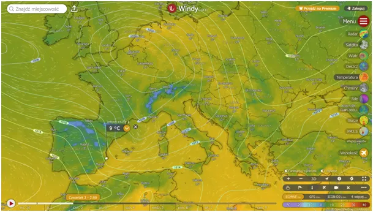
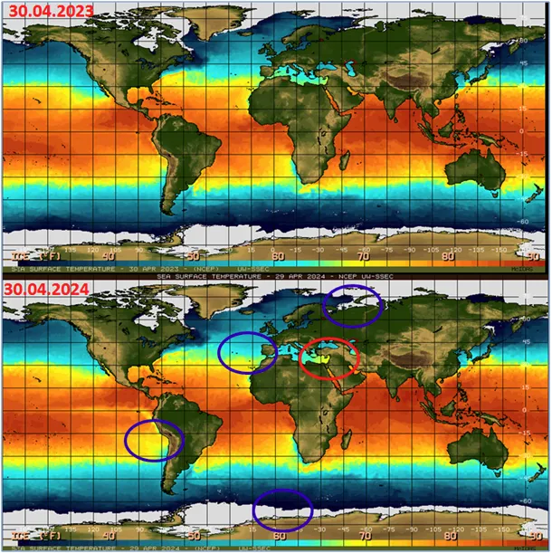
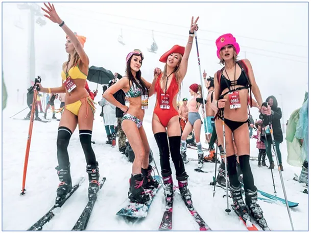

Majówka globalnie.
Mamy szczęście i podobnie jak w okresie Wielkiej Nocy na majówkę pogoda nam sprzyja, ale nie jest tak wszędzie. Podobnie jak wtedy przez Hiszpanię przejdzie zimny front z ulewami i z mrozem w górach.

Na mapce temperatury powierzchni mórz oceanów możemy pobawić się w "pokaż 10 różnic między rysunkami". Na szybko znalazłem 5. Widać, że lądolód wokół Antarktydy jest większy, co pokrywa się z 10 letnim trendem niemieckich badaczy, opisałem to tu: https://nczas.info/2023/11/18/czy-na-obu-biegunach-ziemi-widzimy-globalne-oziebienie/.

Na północy arktyczne porty Europy też jeszcze skute lodem, chłodniejszy jest też Pacyfik co daje przymrozki w górach Kalifornii.

Mamy za to wyjątkowo ciepłe wschodnie Morze Śródziemne co w południowej Turcji wróży rozpoczęcie sezonu narciarsko-kąpielowego przez bogatych Rosjan i Ukraińców, bawiących się razem. Pisałem o tym fenomenie klimatu tureckiego tu: https://pawelklimczewski.pl/2024/04/24/majoweczka-karkoweczka-czyli-na-narty-w-klapkach/
Życzę wszystkim intensywnego odpoczynku ! ;)
Paweł Klimczewski